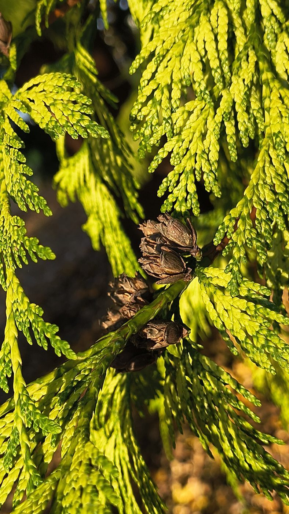
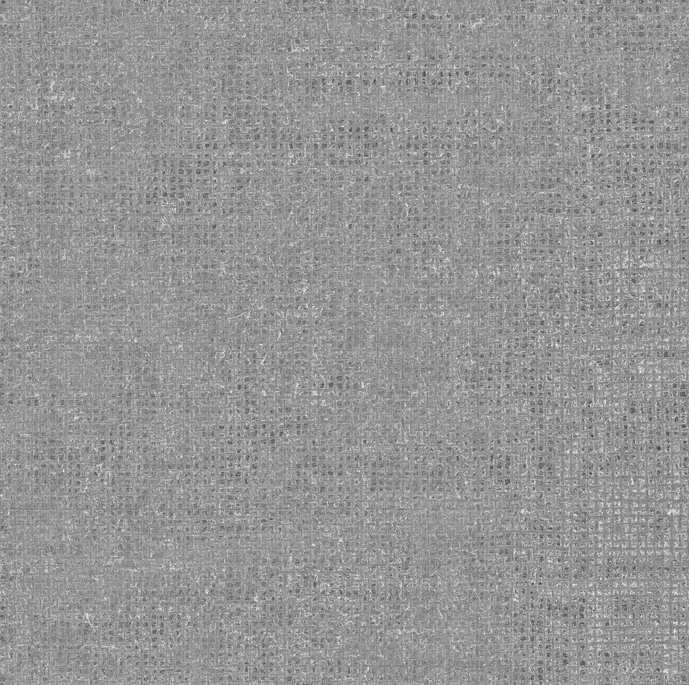

店のこと
手帳の部位の配置図
お店の詳しい情報は準備中です。ここでは、制作側が考えたデザインの考え方を紹介します。


制作側の連想
番号は、部位の番号
ホームの図にある1〜6の番号は、それぞれ手帳の部位の名前に対応します。手帳の部位を図にしたもので、制作側の連想です。お店の理念・由来とは無関係で、実際の製品の仕様を示すものでもありません。
1表紙
手帳の外側を包む板状の部分で、中のページを守るところ。布・革・紙など、素材はいろいろある。
2背
表紙と本文をつなぐ折り目の部分で、糸などでとじてあるところ。
3ゴムバンド
表紙を閉じておくための、ゴムでできたひも状の部分。
4しおりひも
ページのあいだから伸びる細いひもで、開いた位置の目印にするもの。
5小口
重ねた紙の端がそろって見える面で、ページの層が線のように見える。
6角
表紙の四隅にあたる部分で、丸みをつけた形もある。
写真(イメージ)
写真(イメージ)



写真はイメージです。お店のものではありません。